Kimi · 登录后设计与直接复用
已完成正常登录后的代表补证在用户完成正常登录后，用一个中性项目与两条UI样本消息继续研究。新增项目空态、说明编辑保存/取消、会话正文/表格/代码、生成中控件、插件搜索空态和技能目录。
优先直接复用16个原始SVG、通用项目插画、实测系统字体栈与精选组件CSS。没有观察到可导出的实际字体文件，也未声称复用了未出现的图表库。SVG路径与插画原件保留，scope/slot/业务事件为D适配。
主要配对：1455×878 CSS px、DPR1.75、Windows Chrome、英文。第一轮匿名样本是1440×1000/DPR1，单独保留；不将不同条件冒充同一快照。原版A与独立参考D分开，参考通过不证明原版。
空项目 → 阅读集合
保留主列、底部输入与右侧辅助卡。源图为自建中性项目，目标内容映射到阅读任务。

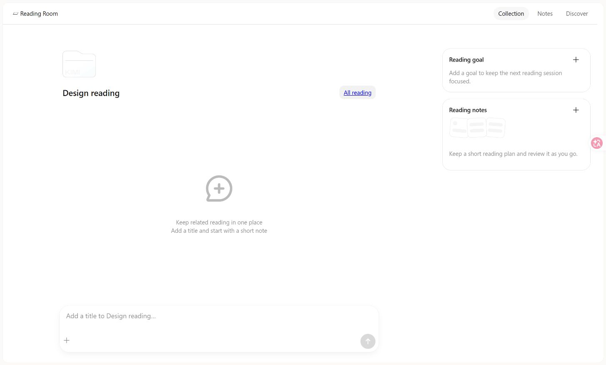
说明编辑 → 阅读目标
原版560px编辑容器、灰色多行输入与右侧动作层级。目标保存/取消有实际行为；字段内容和高度细节是明确适配。
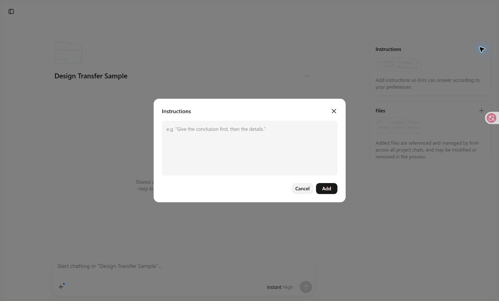
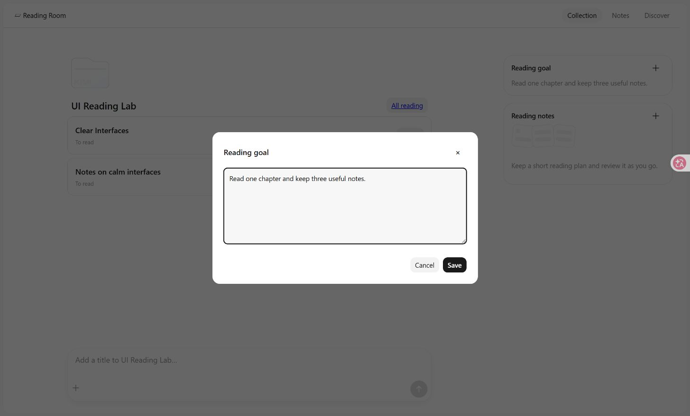
会话富文本 → 阅读笔记
正文720px、标题角色、表格与代码块映射。目标省略聊天输入，保留返回集合和复制；文字/滚动位置不同。
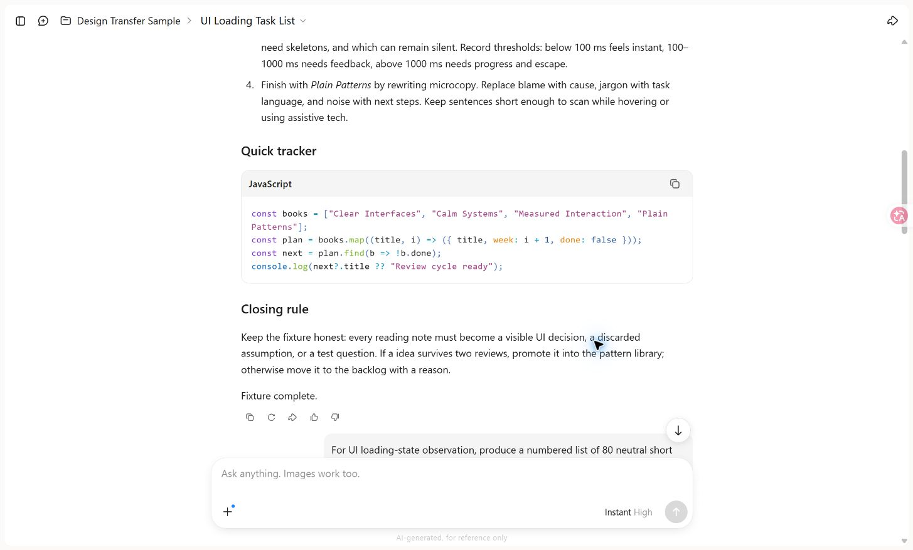
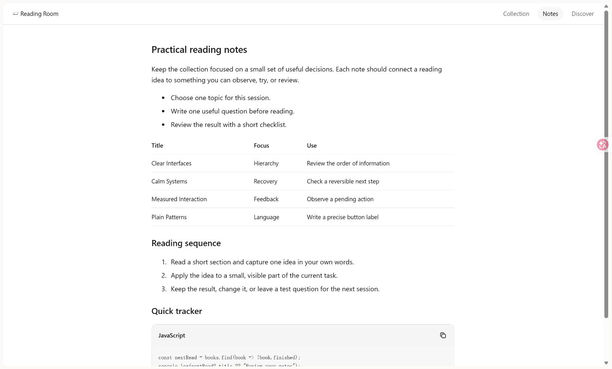
插件目录 → 发现阅读
保留800px内容列、搜索、分类与双列条目。Install改成真实Add reading，不模拟第三方授权。
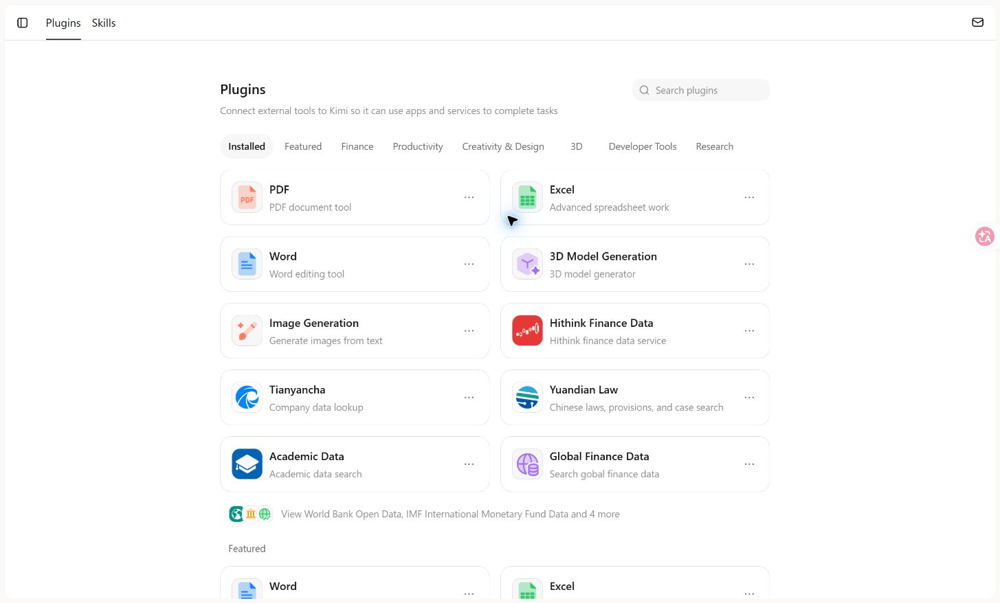
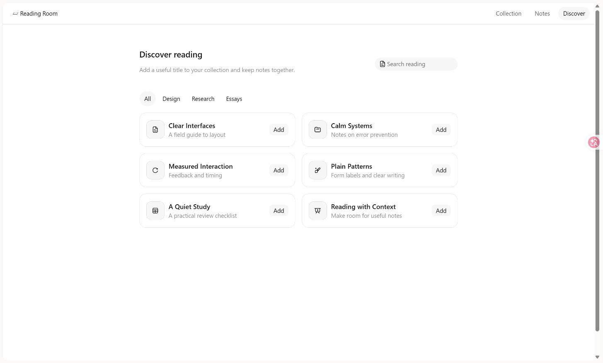
生成中状态 · 原版 A
实际观察到pending/stop图形与排队占位；未点击停止验证后端取消，不推断请求已取消。
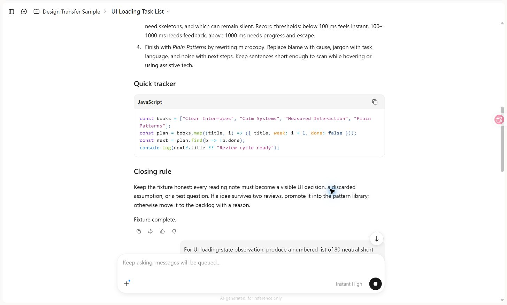
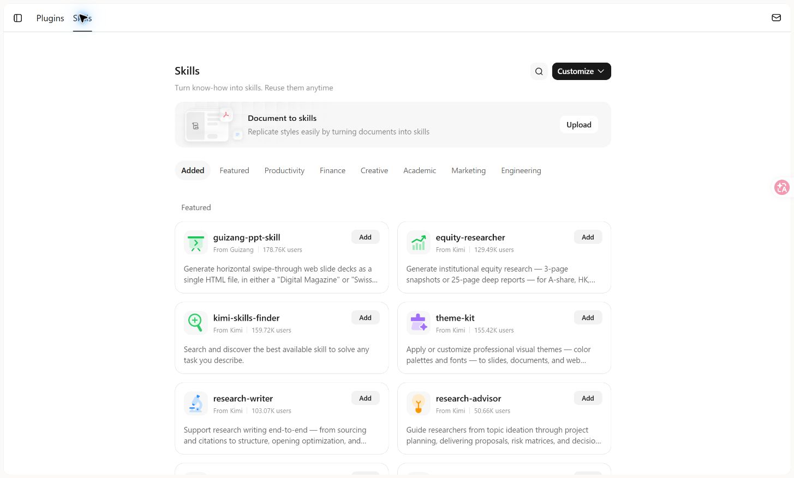
空结果与窄屏目标适配
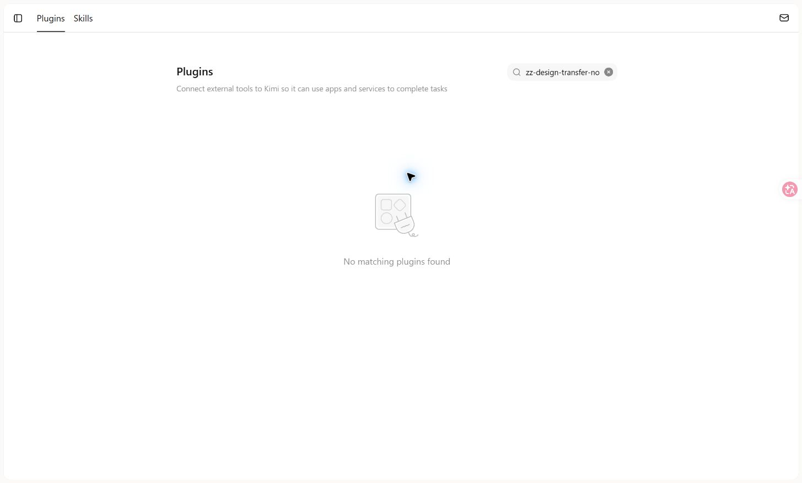
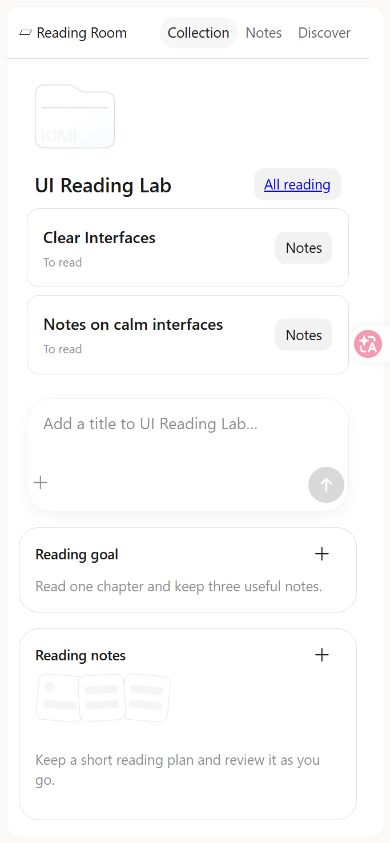
16项新增检查通过：取消/保存、重命名、添加、正文结构、720px列宽、无结果、真实目录添加、刷新保留、SVG/字体/组件CSS实际绑定、窄屏、旧输入/工具面板回归和脚本错误检查。
未覆盖真实网络失败、后端取消/竞态、第三方授权、收费、真实移动UA和全部业务分支。这些边界没有变为原版verified。原版私人历史、账号标识和凭据未纳入分发；项目选择器私人原图留在.runtime。项目文件夹PNG含原版浅色Kimi水印，留作私有设计研究；新品牌产品可改用同包无品牌Folder SVG。